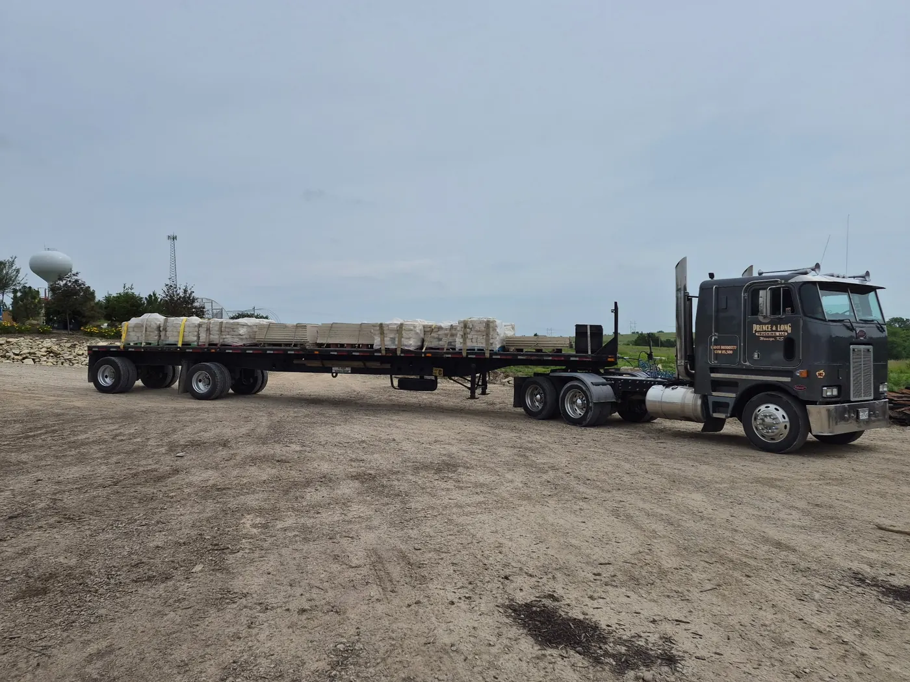
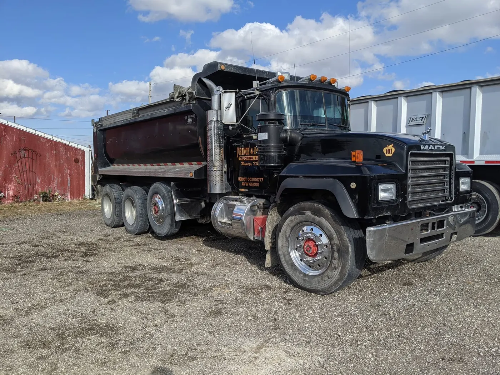
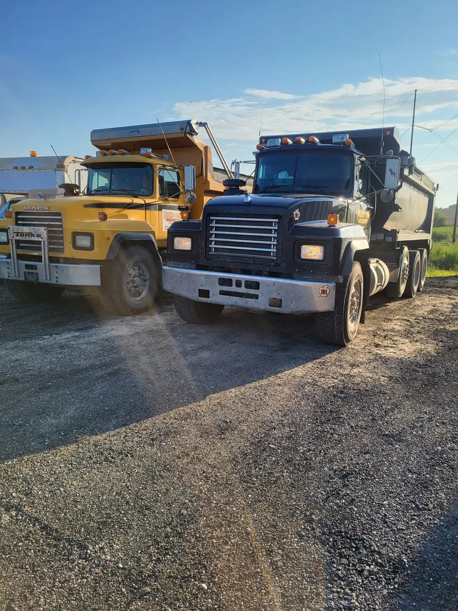
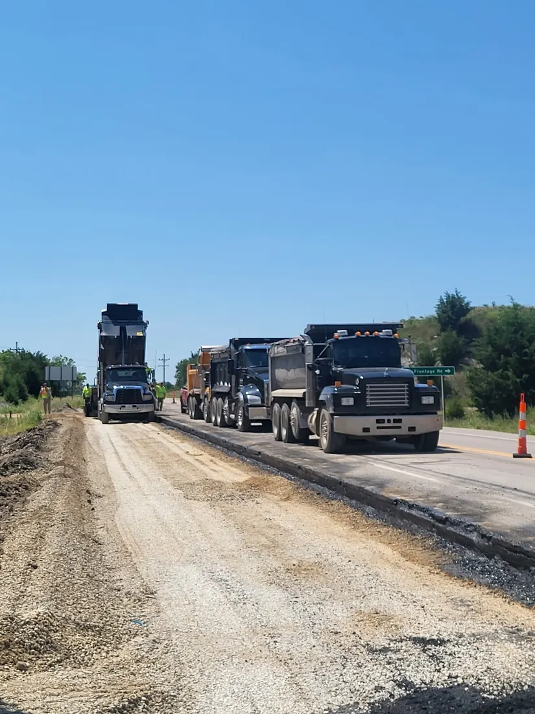
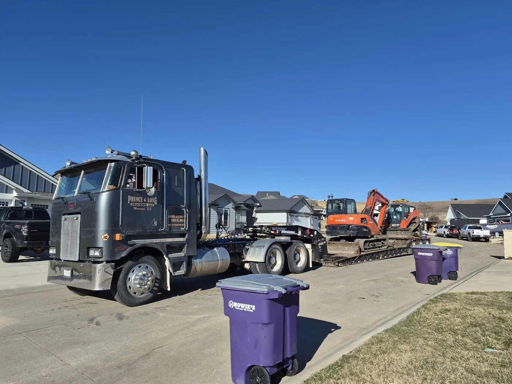
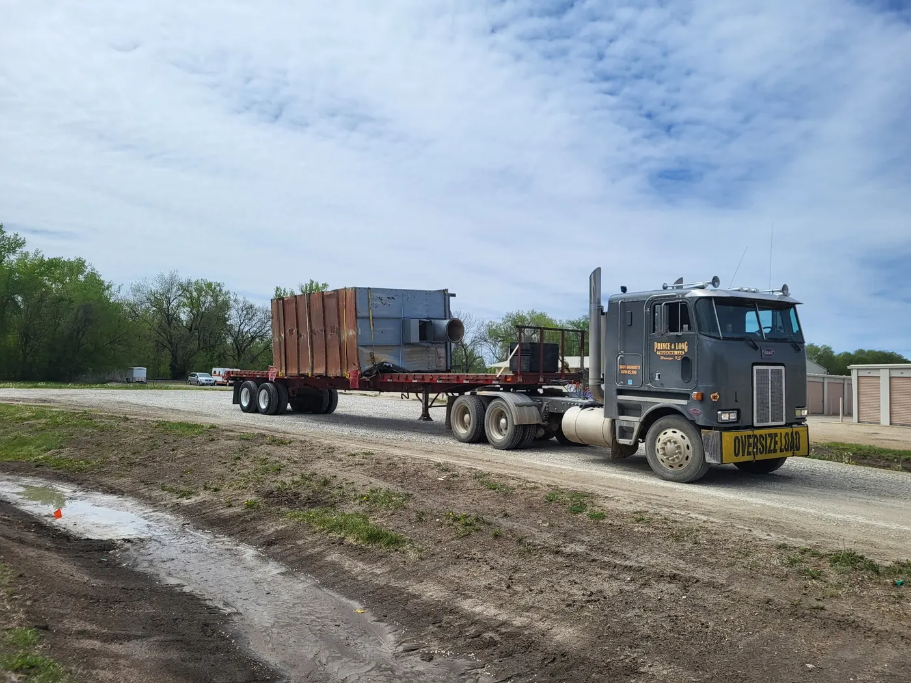
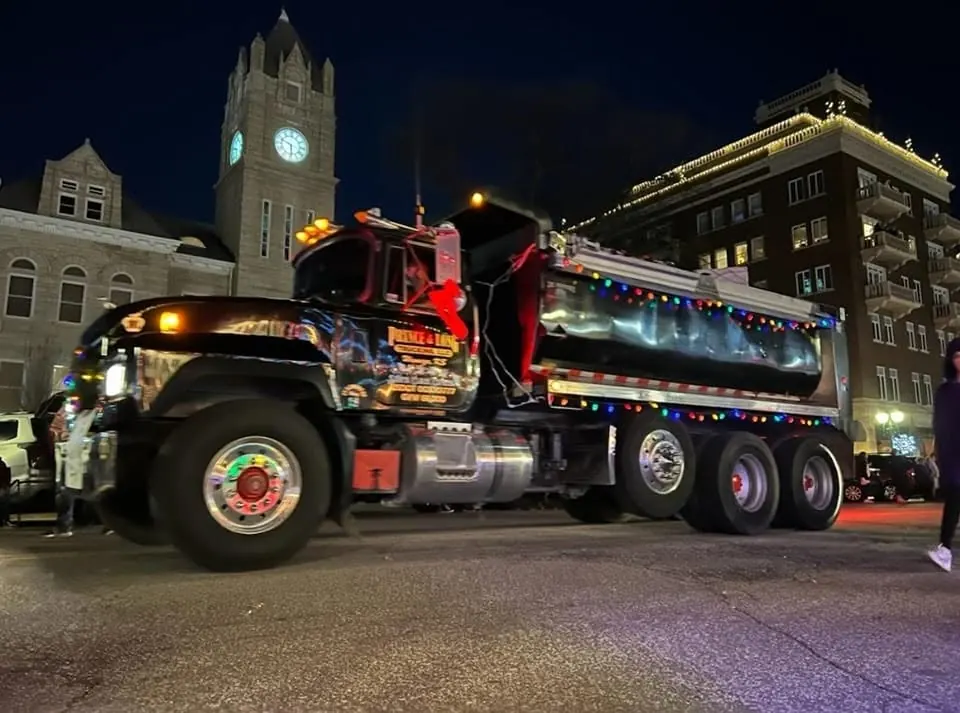
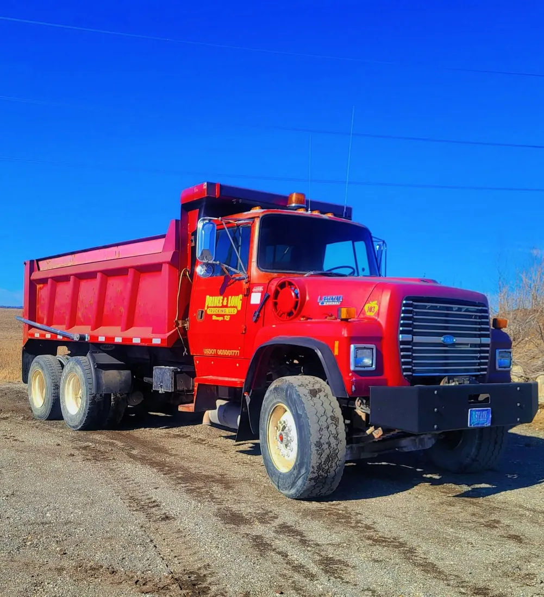
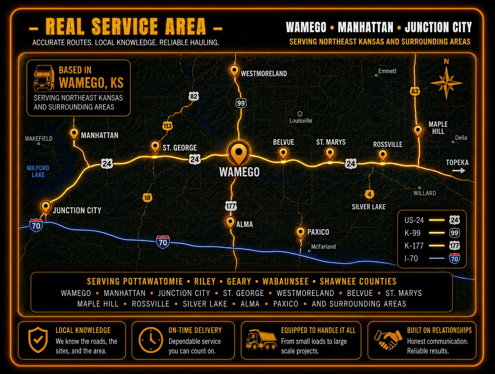
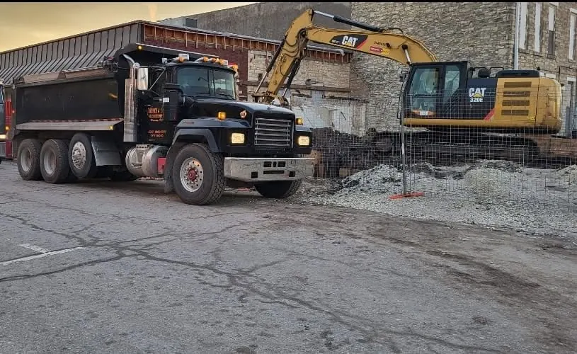

Dump Truck Hauling &
Material Delivery in Northeast Kansas
Your Load. Our Reputation.
Rock
Dirt
Sand
Asphalt Millings
Equipment Hauling
Freight
One-Off Loads
Based in Wamego and serving contractors, farms, municipalities, and job sites across Northeast Kansas.
Hard-working crews. Professional coordination. Prompt service that helps keep projects moving.
Dump Truck and Hauling Services

Dirt Hauling

Sand and Aggregate Hauling

Asphalt Millings Delivery

Equipment Hauling

Local Freight and Specialty Loads
Fleet & Capability
Equipment Ready for the Work
A versatile hauling fleet built to support material delivery, construction sites, rural projects, equipment moves and scheduled contractor work across Northeast Kansas.


Service Area
Dump Truck Hauling Across Northeast Kansas
Based in Wamego and serving the surrounding region
Prince & Long Trucking provides dependable dump truck hauling, material delivery, equipment hauling, and contractor support throughout Northeast Kansas. We serve Wamego, Manhattan, Junction City, St. George, Westmoreland, Alma, Paxico, and nearby communities in Pottawatomie, Riley, Geary, and Wabaunsee counties.
Services include rock and gravel delivery, dirt and sand hauling, asphalt millings, construction and sitework support, farm and rural hauling, local freight, and scheduled or one-off loads.

Material
Delivery
Rock • Dirt • Sand
Asphalt
Millings
Equipment
Hauling
Farm Equipment • Skid Steers
Construction
Equipment
Freight &
Specialty
One-Off Loads • Local Freight
Contractor
Support
Serving
📍 Wamego
📍 Manhattan
📍 Junction City
📍 Paxico
📍 Alma
📍 Westmoreland
Commercial Hauling Support
Built to Keep Jobs Moving
Prince & Long Trucking supports excavation, paving, sitework, construction, farm and public-works projects with dependable hauling and clear load coordination.
Contractor SupportScheduled loads for excavation, paving and site preparation.
Municipal & Public WorksMaterial hauling for roads, maintenance and public projects.
Farm & Rural ProjectsRock, dirt, sand and equipment hauling for rural properties.
Flexible SchedulingOne-time deliveries or recurring hauling based on availability.

Serving Northeast KansasWamego • Manhattan • Junction City
Responsible Operations
Professional From Dispatch to Delivery
Every job is approached with clear communication, safe equipment operation and attention to the conditions that keep a site moving efficiently.
Safety First
Responsible equipment operation, load handling and jobsite awareness on every haul.
Clear Communication
Direct coordination on timing, access, material and changing site conditions.
Jobsite Ready
Registration, insurance and vendor documentation are available to qualified customers during onboarding.
Easy Scheduling
Request Pricing
Send the load details once and Prince & Long Trucking will follow up with availability, timing, and pricing.
What We Need
- Material or load type
- Pickup and delivery locations
- Approximate quantity
- Preferred date or time
- Access details for the truck
Why Prince & Long
Hard-Working, Professional and Prompt
Hauling affects the pace of the entire project. Prince & Long Trucking works to make that part straightforward through responsive communication, practical scheduling and dependable service throughout Northeast Kansas.
Whether the request is a single material delivery or recurring support for a contractor, the goal is the same: understand the load, confirm the access details and help keep the work moving.
Hard-Working
Prepared to support demanding construction, rural, agricultural and property projects.
Professional
Courteous communication, responsible equipment operation and attention to jobsite requirements.
PROMPT SERVICE
Clear scheduling and timely updates so customers can plan crews, equipment and material needs.
Simple Process
From Load Details to Delivery
Every project starts with a conversation. Whether you need rock, dirt, sand, asphalt millings, or other aggregate materials delivered, we work with you to understand the job, coordinate the details, and provide dependable service from start to finish.
Describe the Job
Share the material, approximate quantity, pickup and delivery locations, preferred timing and site-access details.
Confirm the Plan
Availability, route, equipment needs and scheduling are reviewed before the haul is confirmed.
Keep It Moving
The load is coordinated with professional communication and attention to safe, prompt service.
Planning Tool
Material Volume Estimator
Estimate the cubic yards needed for a driveway, road, pad, drainage project or other rectangular area. Enter what you know below. Prince & Long can help confirm the material and final quantity.
Plan Your Project
Material Delivery and Hauling Resources
Explore delivery options, compare common materials and find hauling services for residential, agricultural and contractor projects across Northeast Kansas.
Common Questions
Hauling and Delivery FAQs
What information helps with an accurate price?
Provide the material or load type, approximate quantity, pickup and delivery locations, requested date, truck-access conditions and any timing restrictions.
Do you work with both contractors and property owners?
Prince & Long Trucking serves contractors, farms, businesses, municipalities and property owners, subject to project requirements and scheduling availability.
What areas do you serve?
The company is based in Wamego and serves communities throughout Northeast Kansas, including Manhattan, Junction City, St. George, Westmoreland, Alma, Paxico and surrounding areas.
Can I request a one-time delivery?
Yes. One-time loads and recurring hauling requests are considered based on material, route, access, equipment needs and availability.